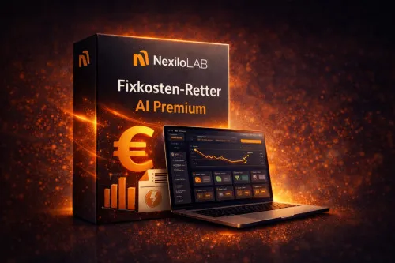

Fixkosten-Retter AI Premium – Windows Software
Produktprofil · Marktplatz-Daten 2026-10-09 · Verkaufsseiten-Recherche 2026-10-09 · Kategorien: Software
- Fixkosten-Retter AI Premium – Windows Software ist ein/e Software in Software, vertrieben über den Digistore24-Marktplatz von Anbieter EnricoLanciani, gelistet seit 2026-05-20.
- Listenpreis $36.66; Digistore24 meldet — Checkout-Konversion, — Stornierungsquote und 40 % Affiliate-Provision.
- Verdienst pro Verkauf (Affiliate): $14.66 (Anbieter-seitige Statistik, keine Prognose).
Interesse an Fixkosten-Retter AI Premium – Windows Software? Aktueller Preis, Boni und Garantiebedingungen finden Sie auf der offiziellen Seite des Anbieters:
Offizielle Verkaufsseite ansehen
Affiliate-Link (Werbung) — wir verdienen ggf. eine Provision, ohne Mehrkosten für Sie.

Marktplatz-Daten
| Produkttyp | Software |
|---|---|
| Preis | $36.66 (Single payment) |
| Affiliate-Provision | 40 % |
| Garantie/Rückgabe | Laut Verkaufsseite des Anbieters — vor dem Kauf auf der offiziellen Seite prüfen |
| Anbieter | EnricoLanciani (gelistet seit 2026-05-20) |
| Marktplatz-Statistiken* | Checkout-Konversion — · Stornoquote — · Verdienst/Verkauf $14.66 |
* Anbieter-seitige Statistiken von Digistore24; sie hängen von der Traffic-Qualität ab und sind keine Prognose.
Marktplatz-Beschreibung des Anbieters
Fixkosten-Retter AI Premium ist ein herunterladbares Windows-Softwareprodukt für private Nutzer, die ihre wiederkehrenden monatlichen Kosten besser strukturieren, analysieren und organisieren möchten. Das Tool hilft dabei, regelmäßige Ausgaben wie Verträge, Abonnements, Versicherungen, Energie, Telekommunikation und weitere Fixkosten übersichtlich zu erfassen. Nutzer können Kostenbereiche prüfen, …
Von der Verkaufsseite des Anbieters
Seitentitel: Fixkosten-Retter AI Premium | NexiloLab
Meta-Beschreibung: Desktop-Software für Privatpersonen, Paare und Haushalte, die ihre laufenden Fixkosten analysieren, Sparpotenziale erkennen und sofort nutzbare Vorlagen erhalten möchten.
Hauptüberschrift
Fixkosten-Retter AI Premium
Abschnitts-Überschriften
- Was Sie mit Fixkosten-Retter AI Premium tun können
- Für wen ist das Produkt geeignet?
- Was Sie erhalten
- Starten Sie jetzt mit mehr Klarheit über Ihre laufenden Kosten
Einstiegstext
Fixkosten-Retter AI Premium ist die Desktop-Software für Privatpersonen, Paare und Haushalte, die ihre laufenden Kosten in wenigen Minuten analysieren, Sparpotenziale erkennen und sofort nutzbare Vorlagen für konkrete nächste Schritte erhalten möchten.
Falls Windows beim ersten Start eine Sicherheitsmeldung anzeigt, klicken Sie auf „Weitere Informationen“ und anschließend auf „Trotzdem ausführen“ – jedoch nur, wenn Sie die Datei über den offiziellen Download-Link nach dem Kauf heruntergeladen haben.
Fixkosten-Retter AI Premium hilft Ihnen dabei, unnötige Belastungen sichtbar zu machen, Einsparpotenziale zu erkennen und direkt mit konkreten nächsten Schritten zu starten.
Wichtiger Hinweis: Fixkosten-Retter AI Premium ist ein digitales Analyse- und Strukturierungstool für private Haushalte. Es ersetzt keine steuerliche, rechtliche oder unabhängige Finanzberatung.
Recherche-Methode: rohes HTML · 323 Wörter · Qualität: medium · recherchiert am 2026-10-09. Vollständige Recherche-Datei (MD) ↗
Wie Produkte dieser Art geliefert werden
Allgemeiner Hinweis zu diesem Produkttyp (keine anbieterspezifische Anleitung): Software wird digital geliefert — entweder als direkter Download oder per Lizenzschlüssel/Mitgliederbereich nach dem Checkout. Für die genaue Anwendung von Fixkosten-Retter AI Premium – Windows Software sind die offizielle Verkaufsseite und die enthaltenen Materialien maßgeblich.
Gut zu wissen
- Keine Garantie-Formulierung in unserer Recherche gefunden — bestätigen Sie das Rückgabefenster auf der offiziellen Seite, bevor Sie kaufen.
Häufige Fragen zu Fixkosten-Retter AI Premium – Windows Software
Was ist Fixkosten-Retter AI Premium – Windows Software?
Fixkosten-Retter AI Premium – Windows Software ist ein Angebot des Typs „Software" im Digistore24-Marktplatz, Anbieter: EnricoLanciani, gelistet seit 2026-05-20. Eingepflegt unter Software. Digistore24 wickelt Checkout, Lieferung und Rückgaben ab.
Wie viel kostet Fixkosten-Retter AI Premium – Windows Software?
Der Digistore24-Marktplatz listet es für $36.66 (single payment). Preise legt der Anbieter fest und können sich ändern — die offizielle Verkaufsseite zeigt den aktuellen Preis.
Gibt es eine Geld-zurück-Garantie für Fixkosten-Retter AI Premium – Windows Software?
Unsere Verkaufsseiten-Recherche hat keine explizite Garantie-Formulierung gefunden. Viele Digistore24-Produkte bieten 60 Tage Geld-zurück, aber das legt jeder Anbieter selbst fest — bestätigen Sie es auf der offiziellen Verkaufsseite, bevor Sie kaufen.
Ist Fixkosten-Retter AI Premium – Windows Software seriös?
Wir bewerten keine Seriosität — wir veröffentlichen überprüfbare Zahlen: Anbieter EnricoLanciani (gelistet seit 2026-05-20), Checkout-Konversion —, Stornoquote —, Affiliate-Verdienst/Verkauf $14.66 (alles Anbieter-seitige Marktplatz-Statistiken). Lesen Sie unsere Recherche-Standards und entscheiden Sie anhand der Zahlen.
Wo kann ich Fixkosten-Retter AI Premium – Windows Software sicher kaufen?
Nur über die offizielle Verkaufsseite, die auf dieser Seite verlinkt ist (Checkout und Rückgaben laufen über Digistore24). Prüfen Sie dort Preis und Garantie vor der Bestellung. Der Link ist ein Affiliate-Link — der Kauf unterstützt diese Website ohne Mehrkosten für Sie.
Ähnliche Angebote in Software

Maya: digitale Assistentin für WhatsApp und Telefon Maya beantwortet Kundenanfragen kleiner Betriebe rund um die Uhr auf WhatsApp und im Paket mit Telefon auch

Zencaptcha schützt Webseiten vor Spam und betrügerischen Aktivitäten. Falsche und temporäre E-Mail-Adressen werden erkannt und Bots werden herausgefordert, noch

+++ Willkommen beim Meisterbot-Partnerprogramm! +++ Verdienen Sie über 850 EUR Provision pro Sale mit der ersten schlüsselfertigen KI-Telefonzentrale für den Mi

Verdienen Sie 40 % Provision!Werden Sie Affiliate und profitieren Sie von unserem attraktiven 40% Partnerprovisionssatz – eine der höchsten Provisionen auf Digi
Weitere Angebote von EnricoLanciani
Der KI-Exposé-Assistent ist ein digitales Produkt für Immobilienmakler, kleine Maklerbüros, Immobilienvermittler und Anbieter, die strukturierte Immobilieninfor
Gleicher Anbieter auf unserer englischen Website
- ClaimReady Home Loss Organizer – Windows Software — $32.44 (Software)
- Monthly Bill Cut Assistant Premium – Windows Software — $32.44 (Software)
Gleicher Anbieter, englischsprachige Marktplatz-Listings.
Ähnliche Preislage in Software

Datenprognosen kaufen war noch nie so einfach. Auf Abruf und ohne Abo! Kleinunternehmer, Mittelständler und Berater haben oft kein eigenes Datenanalyse-Team. Pr

Verkaufsseiten-Ersteller Pro Erstellen Sie Landingpages, die tatsächlich verkaufen Vergessen Sie komplizierte, langsame Page-Builder und hohe wiederkehrende mon

„Stundung statt Insolvenz" ist ein 146-seitiges E-Book mit 15 praxiserprobten Anschreiben (bearbeitbare DOCX) und 4 Bonus-Werkzeugen. Es zeigt Selbständige

Schluss mit übertriebenen Marketing Versprechen. Der KI-Produktdetektiv analysiert Werbeversprechen über KI-Tools und zeigt dir BEVOR du zahlst, ob die Versprec
Ähnliche Suchanfragen
Wo Sie es sich ansehen können
Wo Sie es sich ansehen können
Aktuelle Preise, Garantie und Boni finden Sie auf der offiziellen Verkaufsseite:
Offizielle Verkaufsseite ansehen
Das ist ein Affiliate-Link (Werbung) — kaufen Sie darüber, verdienen wir ggf. eine Provision, ohne Mehrkosten für Sie.
Quellen & weiterführende Informationen
- Offizielle Verkaufsseite (aktueller Preis, Garantie, Boni): nexilolab.com/de/fixkosten-retter-ai-premium/ (Affiliate-Link)
- Öffentliche Digistore24-Produktseite: digistore24.com/product/685754
- Vollständige Recherche-Datei (Markdown, versioniert): content/products/56622-fixkosten-retter-ai-premium-windows-software.md
- Affiliate-Supportseite des Anbieters: nexilolab.com/de/affiliate/fixkosten-retter-ai-premium/
- Marktplatz-Kategorie: Software
Wie wir Produkte wie Fixkosten-Retter AI Premium – Windows Software bewerten
Sechs Prüfungen, ausschließlich mit offiziellen Marktplatz-Zahlen. Die vollständige Bewertungsmethode lesen · unsere Recherche-Standards & Kennzeichnung.
function interactionBlock(p) { const q = encodeURIComponent(p.label); const mail = encodeURIComponent("Korrektur: " + p.label); return `Fragen oder eigene Erfahrungen mit ${esc(p.label)}?
Praxis-Tests veröffentlichen wir erst, nachdem wir ein Produkt selbst gekauft haben — aber Ihre Erfahrung hilft anderen Lesern: Diskussion zu ${esc(p.label)} auf GitHub starten/verfolgen. Falsche Zahl gefunden? Korrektur melden — jede Seite zeigt ihre Datenstände, Korrekturen gelten für die ganze Website.
`; }